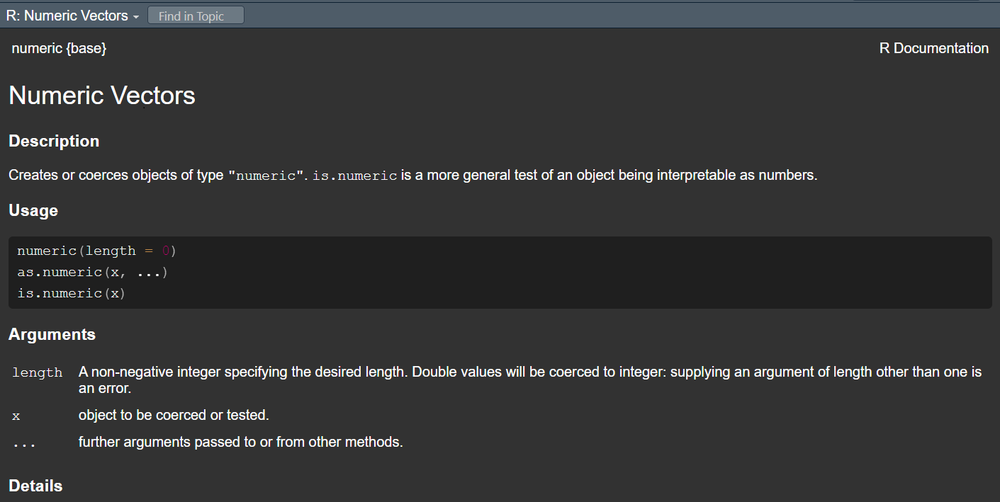

Introduction to R
Download Files
Download this presentation as pdf
To save either file…. Right-click –> ‘Save link as…’. Save file to location. Go to RStudio or Acrobat. File –> Open File… find your file.
Introductions
Instructors:

Why learn to code?
- efficiency
- transparency
- flexibility in application
- shareable
- automated processes/report writing
- marketable skill
- needed for publications
Software
What is R?
R is a “suite of software facilities for data manipulation, calculation and graphical display.”
. . .
R uses packages that are collections of functions, data, and compiled code in a “well-defined format”.
. . .
Packages are downloaded from The Comprehensive R Archive Network (CRAN), R’s central software repository. Also, on GitHub, GitLab, BitBucket or other code sharing platforms.
Why use R?
- open-source and free
- small total user base / large in ecology and statistics
- find help online, e.g., stackoverflow
- data management
- statistics
- plotting / graphics
What is RStudio?
RStudio is an “Integrated Development Environment (IDE)”. It brings tools/languages together. We use R within RStudio.
Why use RStudio?
- Makes using R easier
- Projects (file mgmt)
- R Shiny: Interactive online apps
- R Markdown: Interactive documents
- Quarto: interactive articles, websites, blog, …
- Posit - Certified B corp
Online resources to learn R
Today
Goal
‘Get familiar with fundamentals of R useful for data’
‘To get beyond the initial shock or fear of programming and start using R’
Today
Learning Objectives
- Write and execute code in R via RStudio
- R language vocabulary
- Find help
- Read/write data
- Manipulate data efficiently
- Plot data or results
Today
Execution
- Presentation / code walk through
- Challenges (independent or in teams of 2-3)
Today
Schedule
- 900 - 930: Introductions and setup
- 930 - 1000: RStudio and R (objects and functions)
- 1000 - 1130: Data input and output
- 1130- 1200: Finding help
- 1200 - 1300: Lunch
- 1300 - 1400: Data mgmt
- 1400 - 1500: Plotting
- 1500 - 1600: Final Challenge
Showcases
Brian - R Shiny application that allows users to subset data and visualize 14,586 results
Kyle - example here
Georgia - example here
RStudio
RStudio
Installing Packages

Packages for Workshop
Please install
- tidyverse
- readxl
The language of R
. . .
Objects
A storage place for information; stored in the “Environment”
‘Attributes’ describes the structure or information of the object
The language of R
Objects
The language of R
Objects
# y is an 'object' that is assigned the value 3
y = 3
y[1] 3# Same operation '=' '<-'
y <- 3The language of R
Objects
# We can create new objects from objects
y2 = y-2
y2[1] 1# We can do math with our objects
# Mind your parentheses (order of operation)
y*2 / y*4[1] 8y*2 / (y*4)[1] 0.5Challenge 1
Compute the diameter (d) of the Earth (in km) at the equator using this formula for the circumfrance (c)…
\[d = \frac{c}{\pi}\]
- c = 24,901.55 miles
- 1 km = 0.621 miles
- Hint type in ‘pi’ to see what you get
- Convert the circumference from miles to km.
- Write the formula in R by defining objects and the values given to computer d in km.
Click for Answer
c.km = 24901.55/0.621
d = c.km/piThe language of R
Functions
‘does stuff’; creates or manipulates objects
‘Arguments’ are the types of things a function is asking for; the inputs
The language of R
object = function(attribute1 = input1, attribute2 = input2)
. . .
object = function(input1, input2)
. . .
this = sign(x = -5)
The language of R
Functions
# function - 'c' - concatenate
y = c(1,2,3,4,5,6)is.numeric(y)[1] TRUE# The function 'class' has the argument 'x'
is.numeric(x = y)[1] TRUEThe language of R
Functions
# How to find out the arguments of a function?
?is.numeric
The language of R
Wrapping functions
x [,1] [,2] [,3]
[1,] 1 3 5
[2,] 2 4 6The language of R
Values
- numeric
- integer
- character
- factor
Objects
- vector
- matrix
- array
- list
- dataframe
- S3, S4, S5, and beyond
Types of Values
Numeric
y = 3
class(y)[1] "numeric"Character
y = "habitat"
class(y)[1] "character"Types of Objects
Vector
# An ordered collection indexed 1,2,...n
# Using the function 'c' to concetanate
z1 = c(4,5,6)
z1[1] 4 5 6The value 4 is in element/index/position 1 of the vector
The value 6 is in element/index/position 3 of the vector
# the dimension of a vector
length(z1)[1] 3# A vector of characters
z2 = c("dog","cat","horse")
z2[1] "dog" "cat" "horse"z3 = c("dog","1","horse")
z3[1] "dog" "1" "horse"z3 = c("dog",1,"horse")
z3[1] "dog" "1" "horse"Types of Objects
Subsetting a vector
z3 = c("dog","1","horse","chicken")
z3[2][1] "1"2:4[1] 2 3 4z3[2:4][1] "1" "horse" "chicken"z3[c(2,3)][1] "1" "horse"z3[-1][1] "1" "horse" "chicken"Types of Objects
Vector of factors, a special kind of character string
z4[1] dog dog cat horse
Levels: cat dog horselevels(z4)[1] "cat" "dog" "horse"summary(z4) cat dog horse
1 2 1 Types of Objects
Matrix
x [,1] [,2] [,3]
[1,] 1 3 5
[2,] 2 4 6#rows and columns
dim(x)[1] 2 3Types of Objects
Subsetting a matrix
# get element of row 1 and column 2
x[1,2][1] 3# get element of row 2 and column 3
x[2,3][1] 6# get all elements of row 2
x[2,][1] 2 4 6# same as
x[2,1:3][1] 2 4 6Types of Objects
Array
dim(z5)[1] 2 2 2z5, , 1
[,1] [,2]
[1,] "a" "c"
[2,] "b" "d"
, , 2
[,1] [,2]
[1,] "e" "a"
[2,] "f" "b" Types of Objects
List
# LIST - a bucket - will take anything
my.list = list(z1, z2, z3, z4, z5)#Subset a list
my.list[[1]][1] 4 5 6my.list[[4]][1] dog dog cat horse
Levels: cat dog horseTypes of Objects
Data frame
E.g., a row for each observation and a column for each variable (can be different types).
x = data.frame(outcome = c(1,0,1,1),
exposure = c("yes", "yes", "no", "no"),
age = c(24, 55, 39, 18)
)
x outcome exposure age
1 1 yes 24
2 0 yes 55
3 1 no 39
4 1 no 18Types of Objects
Subset data.frame
x$exposure[1] "yes" "yes" "no" "no" x['exposure'] exposure
1 yes
2 yes
3 no
4 nox[,2][1] "yes" "yes" "no" "no" Challenge 2
- Create a vector of numbers that has length 6; call this object ‘vec1’.
- Use the function ‘mean’ to find the mean of the values of vec1.
- Subset vec1 to only elements 4 through 6. Call this new object ‘vec1’, thereby overwriting the original vec1.
- Create a new vector (length 3) of characters called “hab1”, “hab2”, and “hab3”. Call this object ‘vec2’.
- Put vec1 and vec2 together into a data frame and call this object ‘dat’
Click for Answer
vec1 = 1:6
mean(vec1)
vec1 = vec1[4:6]
vec2 = c("hab1","hab2","hab3")
dat = data.frame(vec1,vec2)
dat